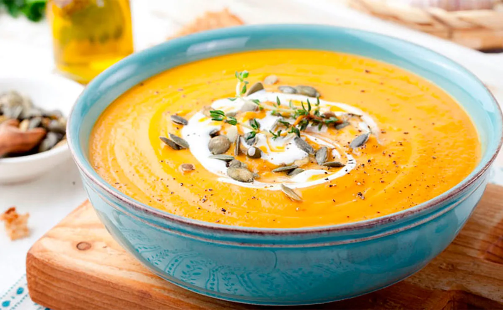

Sopa Crema de Calabaza
INGREDIENTES
| Cantidades | Productos |
|---|---|
| 1 Kg | Calabaza sin piel ni semillas |
| 2 unidades | Chalotas |
| 2 hojas | Laurel |
| 1 cucharadita | Jengibre fresco rallado |
| 2 ramas | Tomillo |
| 1 litro | Caldo de verduras |
| 3 cucharaditas | Aceite de oliva virgen |
| Sal | a gusto |
| Pimienta negra | a gusto |
| Semillas | de calabaza |
| 50 cc | Crema de leche para cocinar |
PREPARACION
- 1. Troceamos la calabaza en dados.
- 2. Pelamos y picamos las chalotas que rehogaremos con el tomillo y el aceite en una cazuela grande durante 4 minutos.
- 3. Añadimos los dados de calabaza y salteamos 1 minuto.
- 4. Agregamos el laurel, mojamos con el caldo, salpimentamos, llevamos a ebullición y cocemos durante 25 minutos a fuego bajo.
- 5. Retiramos el laurel y el tomillo e incorporamos el jengibre rallado.
- 6. Mezclamos y cocinamos durante 5 minutos más.
- 7. Trituramos en la batidora y mantenemos al calor (podemos colarla si preferimos una textura más fina).
- 8. Finalmente, repartimos la crema en cuencos y decoramos con las pipas de calabaza, un toque de pimienta recién molida y un chorrito de nata vegetal.